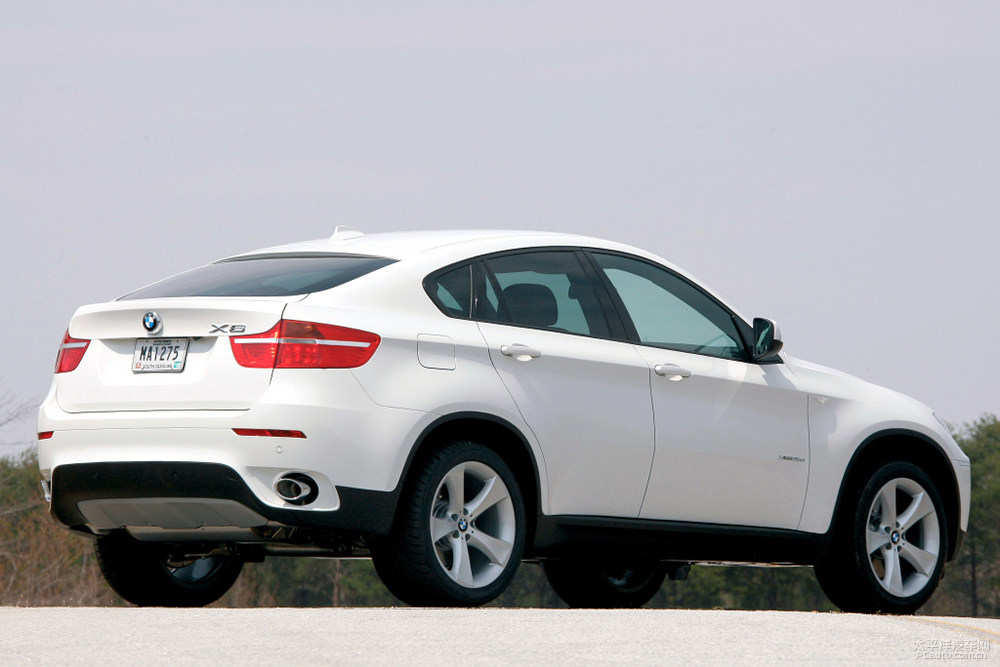
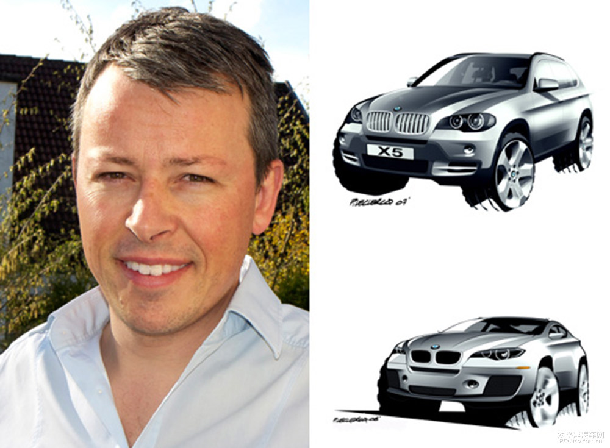
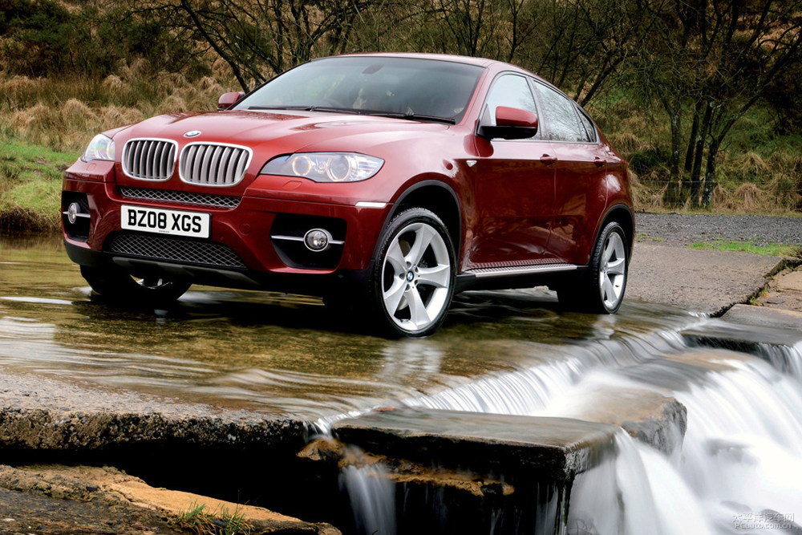

丑与美仅有一线之差 谈轿跑SUV的发展史
一个车企，推出一款尚未量产的纯电动概念车，就以“新物种”称谓之，是让人不耻的。这就等同于仅仅出现在图纸上的生物，科学家就定义成新物种，显然是可笑的。所以，我个人认为，在汽车圈里，真正意义的新物种只有它——轿跑SUV。
什么是轿跑SUV 官方称“运动多功能轿跑”。轿跑SUV确确实实是车坛的新物种。都说敞篷SUV新鲜，其实很早以前路虎就推出过敞篷SUV，那是用于军事上。真正车坛上的新物种，非轿跑SUV莫属，它真真切切存在于汽车这个生态食物链里头。我们眼见的各种旅行车、轿车、两厢车、SUV、超跑等等都是汽车界早已存在的产物，直到2008年开始，第一台“轿跑SUV”——宝马X6的诞生，让大家恍然大悟：“原来SUV还可以这样玩儿！”
宝马X6刚推出，英文官稿给出的介绍是“Sports Activity Coupé (SAC) ”，即运动多功能轿跑。轿跑，体现在车身线条上；多功能，当然指灵活的空间布局；运动，指的是性能上的优势。虽然如此另类的作品让外界对它关于美与丑的评价各执一词，不过这样的新物种，迅速在各个品牌的车系中繁衍。
说到宝马X6，又得说一位重要人物。他是轿跑SUV的开拓者——前宝马X6设计师皮埃尔·勒克莱克先生。皮埃尔·勒克莱克的设计作品包括宝马3系GT、宝马X6、宝马X6 M和X5 M等，如今他已加入到中国长城汽车任职副总裁兼设计总监。我们熟知的哈弗H7、哈弗H8都是由他主导设计。
好，话题回过来，之所以X6被称为“鼻祖”，事关它在2007年便首先以概念车的身份亮相于当年法兰克福车展，成为最早出现这种设计的SUV。它的实车首秀是2008年的北美车展上，新车定位高于宝马X5，因此其长度和宽度都比X5要有所提升。初期只推出了四座版本，直到2011年才发展成为五座车型。
宝马X6基于宝马X5的底盘上研发，不过造型却相当特别，在2009年4月，宝马还推出了预示X6混动版的概念车——BMW Concept X6 ActiveHybrid来表明它将继续深耕X6车系的立场。宝马X6姓“Sport（运动）”，所以当时宝马给它配备全新的动态驱动力分配系统（Dynamic Performance Control）来辅助宝马的xDrive全时四驱系统，因此尽管它是一款高大的SUV体型，不过过弯表现稳定性一流。
在X6 M推出之前的法兰克福车展上，宝马X6的插电式混动版ActiveHybrid X6全球首发，新车采用输出功率为300kW（408PS）的TwinPower V8双涡轮增压发动机与双电机搭配作为动力总成，该动力系统综合输出功率为357kW（486PS），扭矩值高达780Nm。插电式混动版ActiveHybrid X6的推出我认为展示作用大于销量，毕竟2009年全世界对新能源车都处于一种观望的态度。
宝马在2014年巴黎车展上推出第二代宝马X6，历经5年沉淀，大家都普遍接受了宝马X6的外形，因此2014年的换代车型争议并不大。升级之处包括车身运用轻量化材质，使得减重150KG，带有触摸手写功能的新一代iDrive多媒体控制系统也一样出现在了新X6上，汽油发动机有3.0T L6和4.4T V8两款可选,并升级上8速自动变速器。而新一代的X6 M，0-100km/h已经进入4.2秒的范畴。
第二代宝马X6的推出争议并不大，是因为市场上已经开始越来越多类似宝马X6这样采用溜背式尾门造型的轿跑SUV，而且宝马也在2014年春季推出自己的第二款轿跑SUV——宝马X4。宝马渐渐意识到，自己的X系列品牌拥有X1、X3、X5和X6，如果车型再细分一下，能不能推出一款紧凑型的轿跑SUV呢？在2013年纽约车展上宝马推出预示X4设计的BMW concept X4概念车，在2014年纽约车展上，宝马X4全球首发
宝马X4定位于X3与X5之间，采用轿跑式设计，等于留住预算有限但喜欢X6这样设计的消费群体。宝马X4采用与X3相同的动力总成，而且M部门同样为它准备了X40 M40i高性能版，高性能版搭载一台3.0T双涡轮增压发动机，最大功率265kW(360PS)，峰值扭矩465Nm，匹配8速手自一体变速箱，百公里加速时间仅需4.9s。
网友评论
通行证登录注册 |
热门评论
1楼 陌陌不得语 2017-06-25
X6是轿跑SUV鼻祖？！我记得08~09年X6刚刚出来时，我看新闻，一直报道是山寨日本日产的轿跑，报纸上还配有对比图的（我不是谁的粉丝，只是说之前看到的报道），说因为日产的影响力不够，卖不好，宝马后面设计一个差不多的，就是X6，然后一炮走红。现在又变成X6是鼻祖？媒体也真能编。
2楼 态度决定一切 2017-06-25
没错，轿跑SUV的鼻祖应该是2003年的英菲尼迪FX35，当年的3.5 V6自然进气发动机就已经有303hp，后来的FX37更有330hp，甚至还衍生出配置5.0 V8 390hp发动机，从车身线条，性能和调教来说，它才是早于宝马X6出现的轿跑SUV。